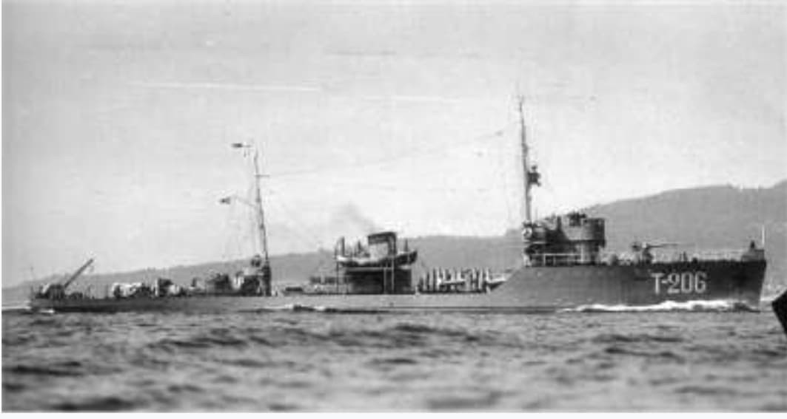
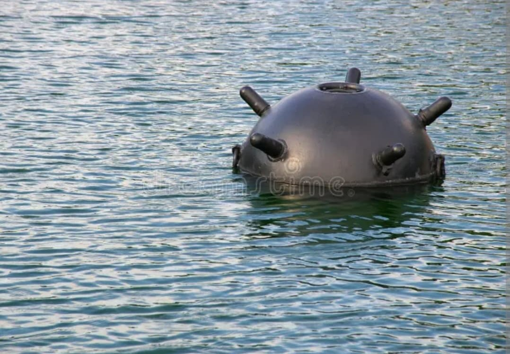
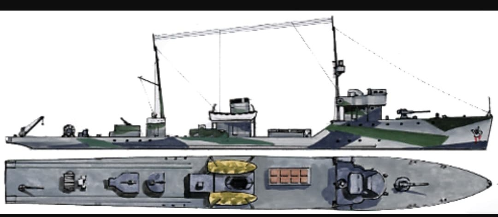

Les « Tralshchiki » : les démineurs des chenaux d'accès navals en Baltique, mer Noire et Arctique

Les dragueurs de mines soviétiques (nommés Tralshchiki) ont constitué la clé de voûte de la survie navale de l'URSS durant la Seconde Guerre mondiale, ouvrant la voie aux sous-marins et navires marchands au milieu de dizaines de milliers de mines ennemies.
La flotte de déminage combinait les dragueurs lourds d'escadre de la **classe Fugas** (Projet 53/58), de petites vedettes côtières en bois non magnétiques, des chalutiers civils réquisitionnés ainsi que des dragueurs YMS livrés au titre du Prêt-Bail (*Lend-Lease*).

Toujours positionnés en tête des convois, ces navires ont payé un très lourd tribut lors du déminage des chenaux du golfe de Finlande et des sorties de ports sous le feu de l'aviation adverse.

Leur mission s'est poursuivie plusieurs années après la capitulation allemande de mai 1945 pour sécuriser les routes maritimes civiles en Baltique et en mer Noire.
Page du Musée HOP WW2 – Section Marine Soviétique